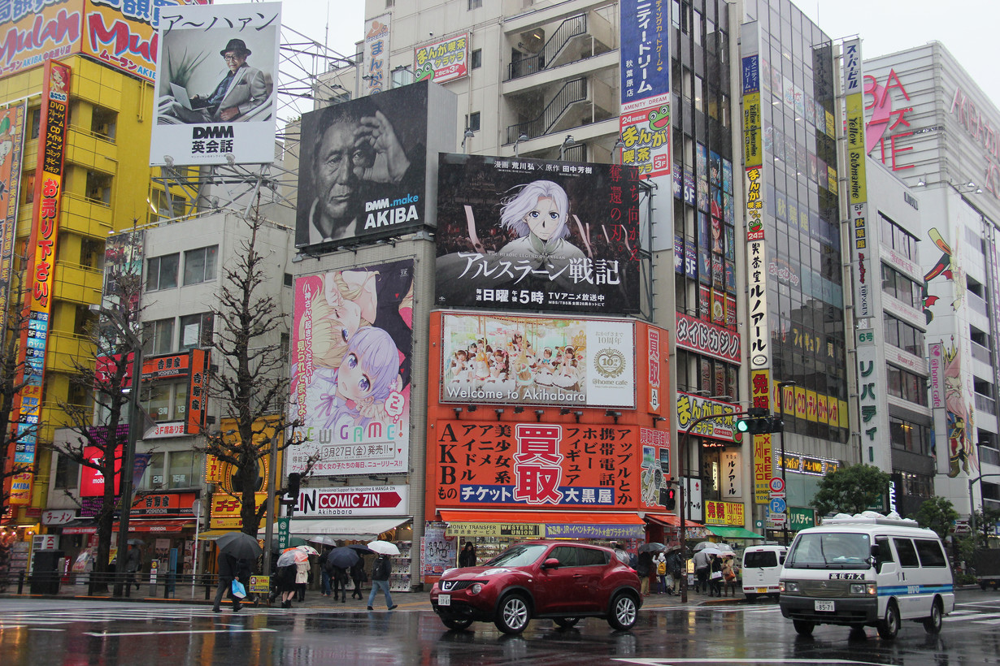

<
>
Message à tous les otaku manga : partons au Japon à la découverte des sites majeurs dédiés à nos livres et films préférés. Pourquoi ne pas garder notre âme d'enfant et marcher sur les traces de nos héros ? Les mangas font partie intégrante de la culture japonaise, il n'y a donc pas meilleure destination pour vivre cette aventure hors du commun.
Créé en 2001 pour célébrer l'auteur Hayao Miyazaki, le musée du studio Ghibli fascine les fans de ses oeuvres : le voyage de Chihiro, Princesse Mononoké, Mon voisin Totoro... L'univers des animés de Ghibli est bien représenté, ce monde enchanté qui fascine tant. Une peluche géante de Totoro est installée à l'accueil, rien de mieux pour commencer la visite avec le sourire. Au sein du musée, plusieurs éléments retracent les coulisses des réalisations de Hayao Miyazaki : la reconstitution de son espace de travail, ses dessins originaux sur les murs... Dans l'un des étages, un espace est réservé à la découverte des techniques utilisées pour la création des films. Le musée étant sur 3 étages, on retrouve des espaces de jeux, un cinéma, des restaurants et des magasins. Pour plus de féerie, un bus chat géant de Totoro et le robot de Laputa sont exposés pour le plus grand plaisir des visiteurs.
Accès : dans la ville de Mitaka, banlieue ouest de Tokyo, les réservations sont obligatoires.
Tarifs : gratuit pour les 3 ans et moins, et de 1 à 8 euros pour les 4 ans et plus.
Les fans ont été déçus de la fermeture définitive du parc d'attractions One Piece liée à l'effet Covid sur la trésorerie. Rien n'est perdu, ils peuvent toujours entrer dans l'univers de Luffy en réalisant leur rêve : naviguer à bord du bateau pirate. Dans un parc à thème nommé Laguna Ten Bosh on retrouve la réplique du Thousand Sunny pour des croisières de 30 à 35 minutes. Une fois à bord, l'immersion est totale : des espaces dédiés à chaque personnage, les statues qui parlent quand on s'approche (le top du top). Dans les magasins souvenirs, des goodies variés sont disponibles et à différents endroits du port de célèbres scènes sont rejouées par des acteurs.
Accès : à Gamagori dans la préfecture d'Aichi.
Tarifs : 4 euros pour les enfants et 10 euros pour les adultes.
Restaurant One Piece à Minato city à Tokyo : les menus sont évidemment sur la thématique du manga, la présentation des plats est originale et fun.
Le parc Naruto & Boruto Shinobi-zato a été créé en 2019 pour le plus grand bonheur des fans. Les amateurs du manga durant la visite découvrent les répliques des lieux iconiques. Les portes vertes du village caché de Konoha, le restaurant de ramens d'Ichiraku, la montagne avec les visages sculptés des Hokage. Des statues à l'effigie des personnages sont très réalistes. Plusieurs parcours d'entrainements ninjas ont été créés, la réalité augmentée aide à les réaliser. Une boutique de souvenirs se trouve au sein du parc, la bonne occasion de trouver des pièces pour compléter une collection.
Accès : l'île d'Awaji préfecture Hyogo dans la ville Sumoto, il ouvre toute la semaine entre 12h et 22h.
Tarifs : 26 euros pour les adultes, 14 euros pour les lycéens et étudiants et 4 euros pour les enfants.
Depuis 1994 Détective Conan passionne les amoureux de manga à travers le monde, raison pour laquelle un musée est dédié à l'auteur et ses oeuvres a été fondé. Dans ce conservatoire, les amateurs du manga s'imprègnent de l'ambiance de leur détective préféré. Les influences de l'auteur, ses planches originales de travail : croquis, dessin élaboré jusqu'au rendu final. Après cette partie éducative vient le côté ludique et interactif avec des gadgets que les visiteurs peuvent tester. On retrouve également plusieurs ateliers autour des techniques des meurtres élucidés par Conan. Après la visite du musée direction le Conan Street où sont exposés pleins de statues des personnages, la voiture du détective.
Accès : ouvert tous les jours de 9h30 à 17h30 dans le district de Tohaku dans la préfecture de Tottori.
Tarifs : 6 euros pour les adultes, 4 euros pour étudiants, 3 euros pour les lycéens et gratuit pour les enfants.
Détective café progress à Tokyo Toshima city, c'est un restaurant sur le thème du manga, les clients peuvent profiter d'un repas et résoudre quelques énigmes avec de vrais détectives.
Tout l'univers du manga est représenté au Pokemon Méga Center à travers des gadgets et jeux. C'est un lieu incontournable pour les fans, l'endroit idéal pour acheter des souvenirs. Le décor est fidèle au style japonais, de superbes sculptures des personnages sont un peu partout. Une grande variété de produits : peluches, bonbons, cartes collectors... Périodiquement, des événements promotionnels sont organisés pour remporter des goodies.
Accès : dans le centre commercial Sunshine City à Tokyo.
Pokémon Café à Tokyo : repas atypiques aux visuels mignons, l'ambiance est sympathique avec une mascotte Pikachu qui joue avec les personnes du restaurant. Après le repas les clients repartent avec un sticker et un autocollant Pokémon.